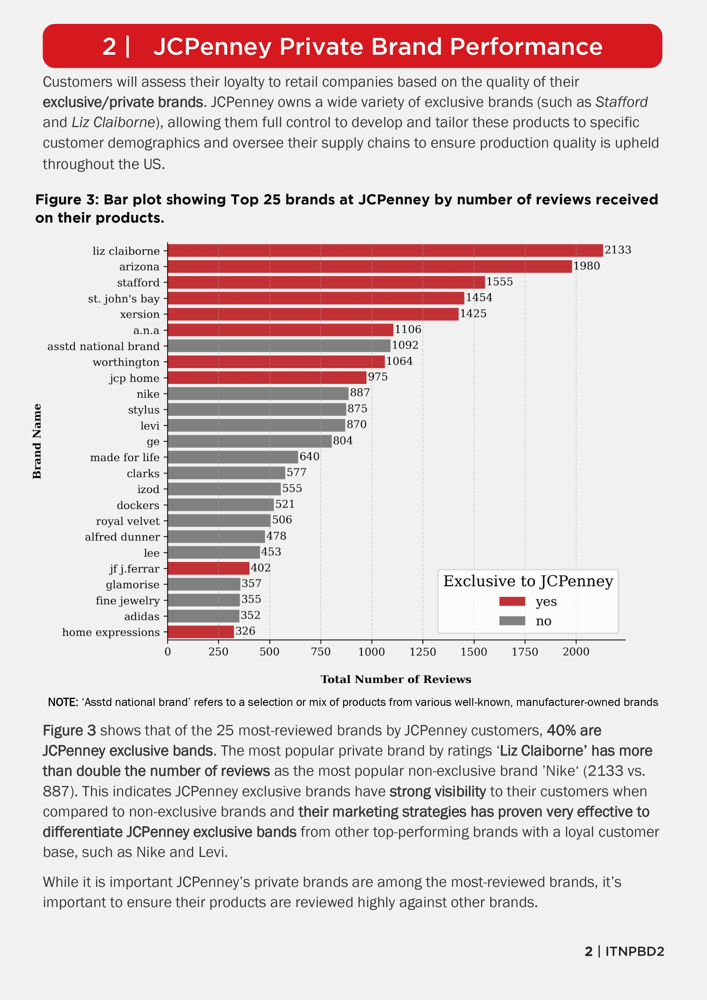
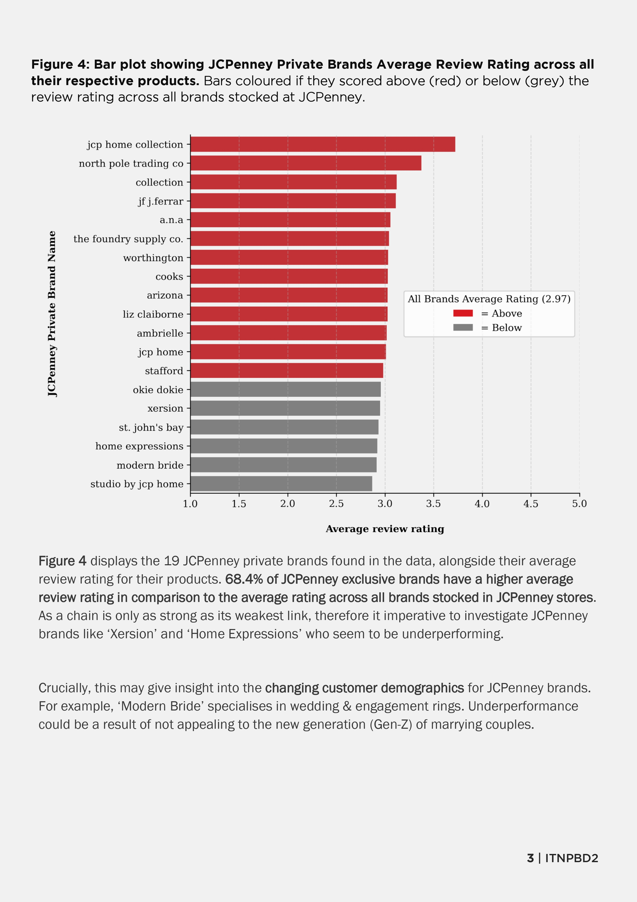
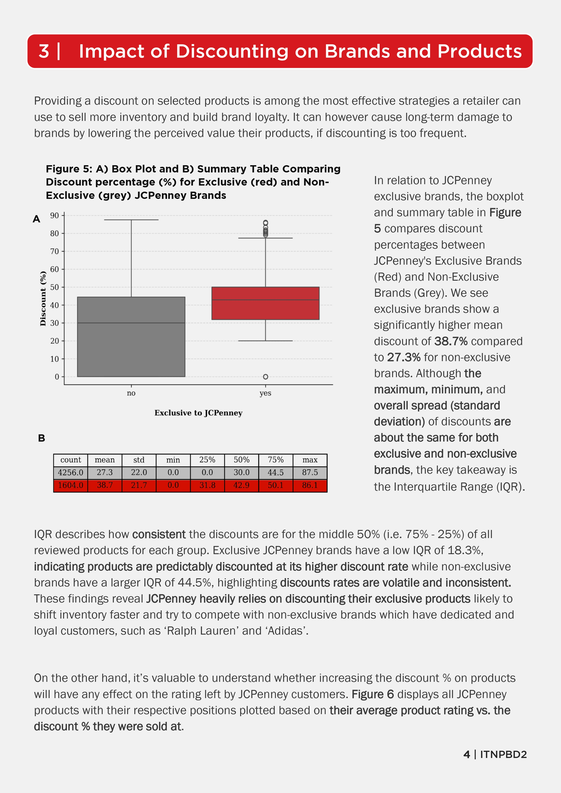
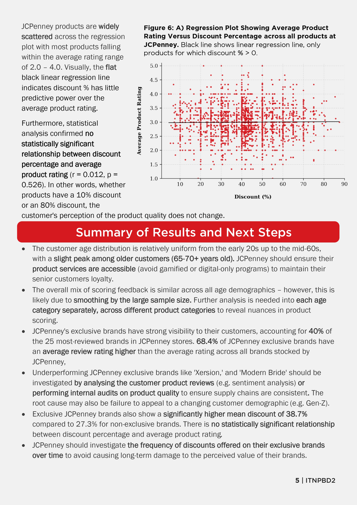
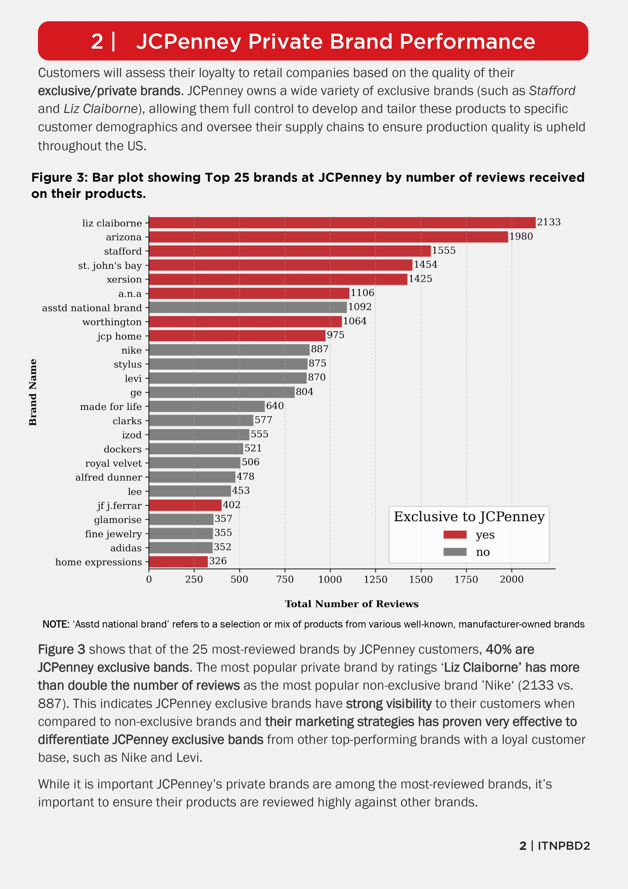
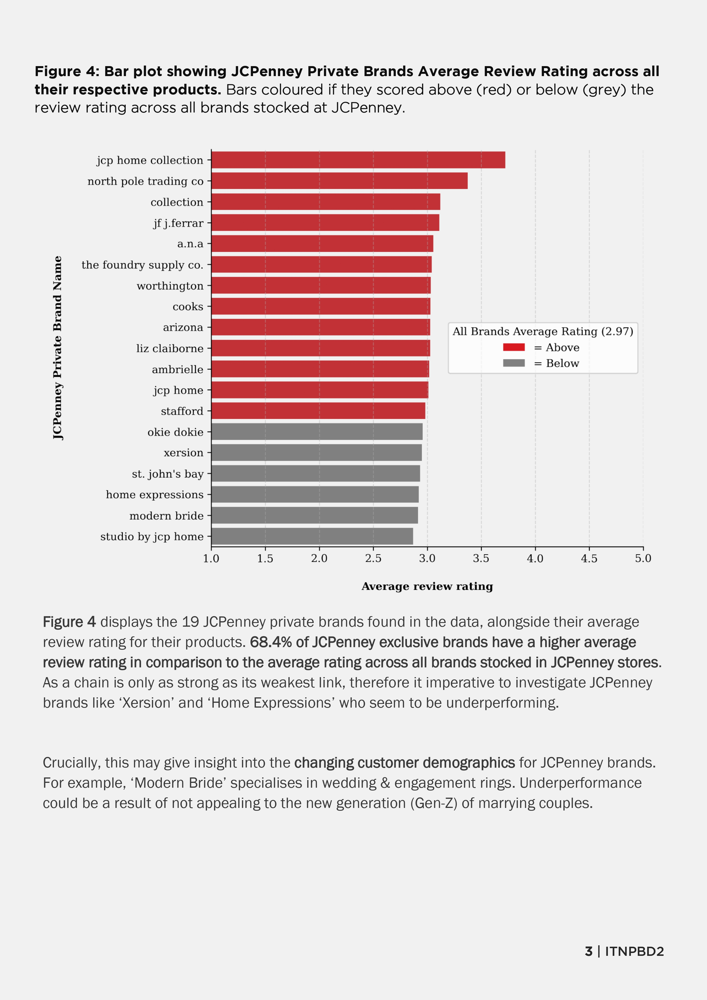
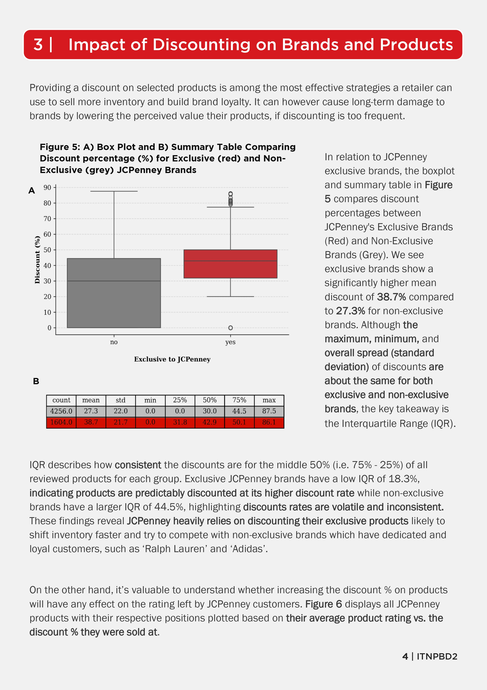
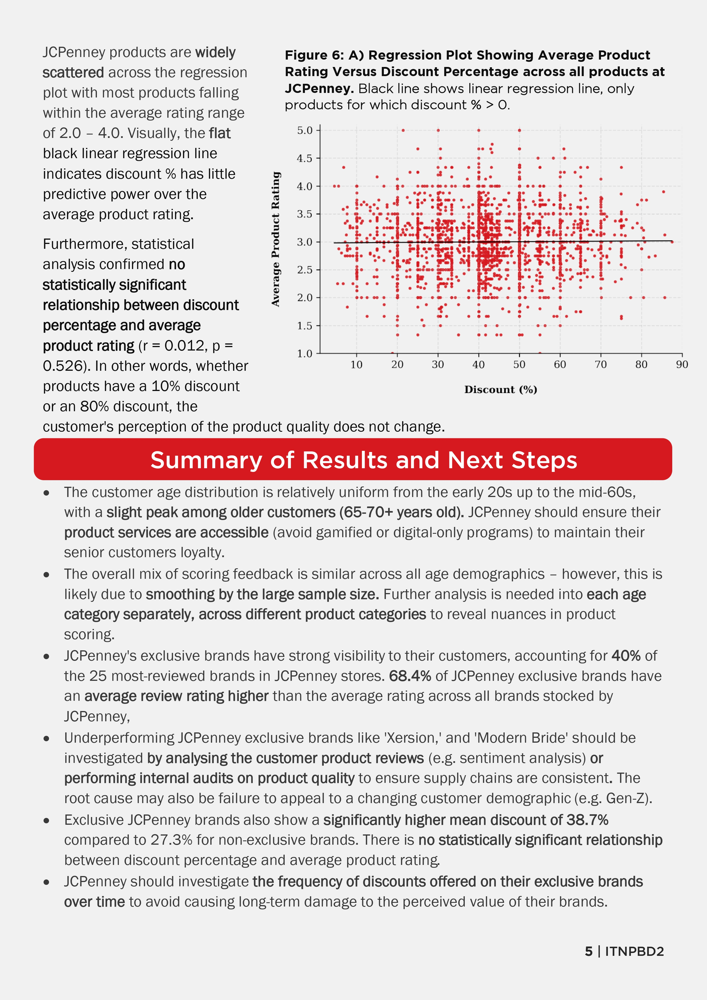

## Business Insights for Retail Company JCPenney - [Report + Source Code(.pdf)](./jcp_report.pdf)


**Goal:** To showcase ability to understand and manipulate raw data and present insights so non-technical audiences can understand the findings
Click to expand/view report
 







---
## Man vs. Keyboard: Statistical Analysis of My Typing Ability - [Report + Source Code(.pdf)](./the_stats_report.pdf)

**Goal:** Take data from day-to-day life and use statistical techniques to get deeper insights into how I approach the task of self-improvement
Using , collected 30 observations over 4 weeks.
* **Variables:**
* **Performance:** WPM (Words Per Minute), Accuracy (%).
* **Test Conditions:** Test length (1 vs. 3 minutes), Test difficulty (Easy vs. Hard).
* **Environment:** Caffeine (Y/N), Music (Y/N), Time of Day, Location (Home, Library, Cafe).
### Statistics Preview
| Question | Statistical Test | |
| :--- | :--- | :---|
| **Does practice make perfect?** | `Linear Regression` |  | **Does music help me focus?** | `Bayesian Inference` |
| **Does music help me focus?** | `Bayesian Inference` |  | **Does coffee increase accuracy?** | `Welchs t-test` |
| **Does coffee increase accuracy?** | `Welchs t-test` |